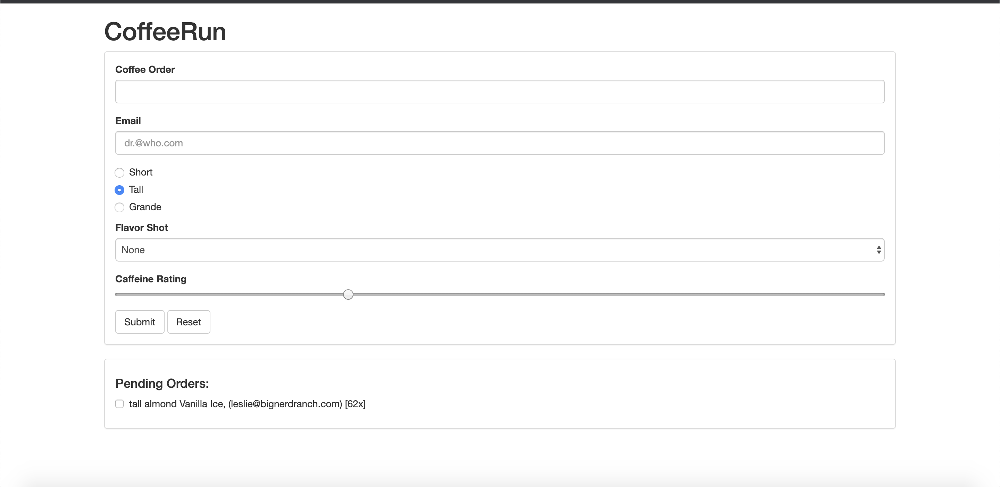

April 25, 2017
I am a passionate developer but more importantly I'm passionate about learning technology.
I am currently 22 years old and studying at California State University of Fullerton. My current interest in the computer science field is working
with websites, game programming, and software development. I am currently looking into AI development as a side interest.
Programming Languages:
As you continue to scroll down this website you can see some of previous projects that I have worked on at my university as well as in my free time.
You can also click on the buttons to go to my github account and see more details about each project. There are also tabs at the top if you want to select a specific project related to a specific Computer Science course or topic.


A website that me and my team built for our Intro to Web Development course.
This website displays image of a map and presented with the current situation with Covid19.
Includes CSS,a gatsbyjs, and chartjs.

A group project website for pets to go on play dates.

Another website project that takes customers' order of coffee.
The website is also uses my knowledge of Bootstrap for a better display.
The website is connected to Ajax and uses jQuery.
The website also uses Google Firebase to update and store orders.
For more content click on the button below.

Another web project that uses for my intro to web development class.
This website uses Node.js and websockets to allow interaction between users that are connected
to the local server. Displays a custom error page when a certain file path does not exist.
For more information about this project click on the link below to see more content.
Another web project that uses for my intro to web development class.
This website uses Node.js and websockets to allow interaction between users that are connected
to the local server. Displays a custom error page when a certain file path does not exist.
For more information about this project click on the link below to see more content.

One of my intro to game development project. Used Unreal Engine 4 and MagicalVoxel to create
a generic crossyroad game. Chicken can jump and move sideways and face the right direction.
A final project for the the semester. Click on the button below to see more content.

Completion of tutorial of unreal engine infinite matrix tutorial
First algorithm project for my algorithm engineering course.
Uses two different functions to organize and test if the disk are
starting with lights and then dark disks.
A demonstration of analyzing time complexity of our algorithm.
For more information click the button below.
My second Algorithm Engineering project. This project also have two functions.
One of the functions demonstrates an Exhaustive Search method using a stack. While the second function
also demonstrates exhaustive search using for loops and 2 arrays. This project taught me about
how using a powerset has a massive time complexity.
The third algorithm engineering project. This project demonstrates an implementation of
cuckoo hashing. We create a hash table using a 2D array. The program reads three different
text files and calculates the relocation of each line of string in the table.
This is a personal project reviewing a basic data structure: linklist. The list
can add and remove nodes with data of type string. The list can also search and
test if the data exist within the implemented list. It can also return a size as well.
Another personal project, where I review on understanding the structure of binary trees.
I've created two types of binary tree. The binary trees can either be of Object Employee
or a integer. Each tree can recursively search and display the entire tree.
Another Algorithm Engineering project, where we use the implementation of dynamic programming.
This project needs to calculate and move the ship away from icebergs and reach
safely to its destination.